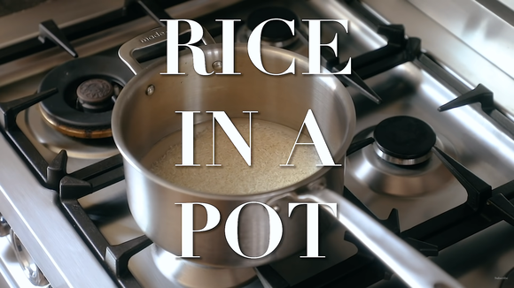

White Rice in a Pot

White Rice Recipe
Simple and tasty white rice recipe.
Ingredients
- 1 Cup of White Rice
- 1 and 1/2 Cups of Water
- Salt to taste
Steps
- In a medium size pot, add rice, water and salt. Set over medium-high heat and bring to a boil
- Lower to a simmer and cover. Lightly simmer for 15 minutes
- Remove from heat and steam an additional 15 minutes
- Place on a pan to cool